Awards
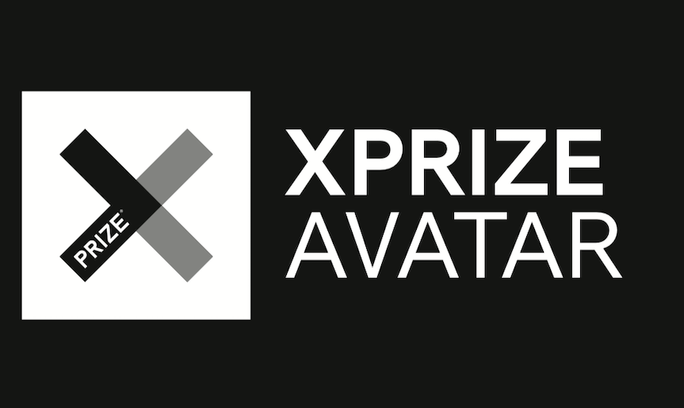
1st Place
2022,
ANA Avatar XPRIZE Challenge
Las Vegas, USA
1st in AdultSize Soccer Competition / 1st in AdultSize Technical Challenge / 1st in AdultSize Drop-In Challenge / Best Humanoid Award
2022,
RoboCup World Cup
Bangkok, Thailand
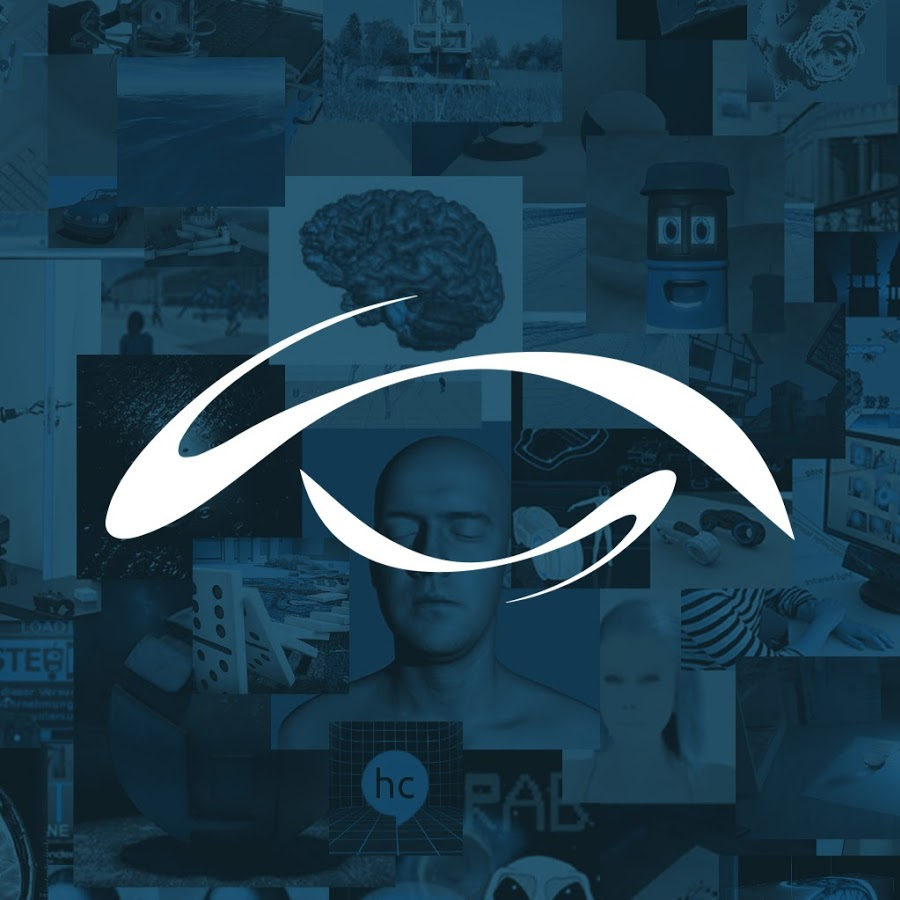
Video Award for AcRec internship
2022,
Day of Computervisualistics
Koblenz, Germany
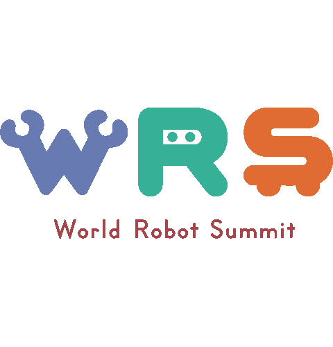
Placed 3rd in the Customer Interaction Category of the Future Convenience Store Challenge (private attendance)
2021,
World Robot Summit
Nagoya, Japan
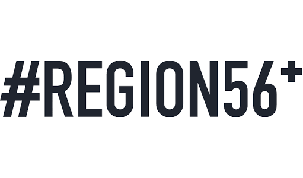
Limbo (private built robot was awarded)
2021,
Region56+ Award
Koblenz, Germany
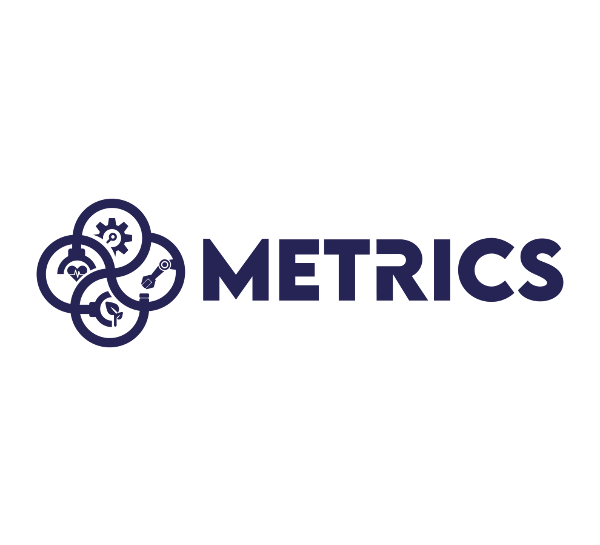
Placed 1st in the Heart-Met Gesture Recognition Challenge / Placed 1st in the Heart-Met Action Recognition Challenge (AcRec@UniKoblenz)
2021,
Metrics Project
Online
Placed 1st in the chair valuation (AcRec internship)
2021,
Day of Computervisualistics
Koblenz, Germany
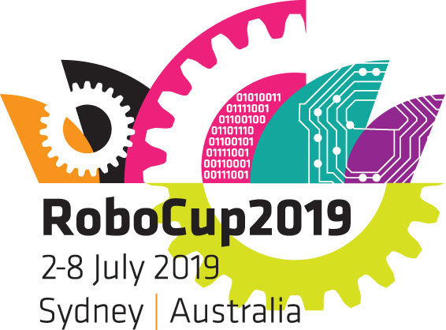
Placed 1st in @Home Open Platform League (World Champion)
2019,
RoboCup World Cup
Sydney, Australia
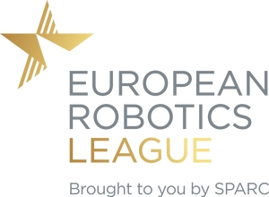
Best in Professional Service Robots League
2019,
European Robotics League
Bonn (Germany), Koblenz (Germany)
Best in Consumer Service Robots League
2019,
European Robotics League
Lisbon, Portugal
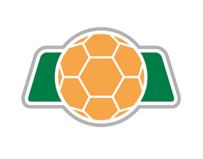
Placed 3rd in @Home League
2019,
RoboCup German Open
Magdeburg
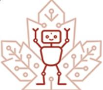
Placed 1st in @Home Open Platform League (World Champion) / Best Poster Award Open Platform League
2018,
RoboCup World Cup
Montreal, Canada
Placed 3rd in the Customer Interaction Category of the Future Convenience Store Challenge
2018,
World Robot Summit
Tokyo, Japan
(some of them shared equally with other teams) Best in TBM1: Getting to know my home / Best in TBM2: Welcoming Visitors / Best in TBM3: Catering for Grannie Annie’s Comfort / Best in TBM5: GPSR
2018,
European Robotics League
Lisbon (Portugal), Edinburgh (Scotland), Barcelona (Spain)
Placed 1st in @Home League
2018,
RoboCup German Open
Magdeburg
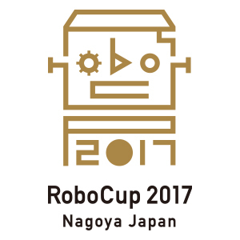
Placed 1st in @Home Open Platform League (World Champion)
2017,
RoboCup World Cup
Nagoya, Japan
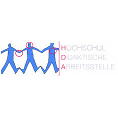
Lehrpreis Sommersemester 2017 | Projekt- und Forschungspraktikum: Robbie
2017,
Lehrpreis der Hochschuldidaktischen Arbeitsstelle
Koblenz, Germany
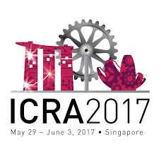
Finalist
2017,
ICRA 2017 DJI RoboMaster Mobile Manipulation Challenge
Singapore, Singapore
Placed 1st in @Home League
2017,
RoboCup German Open
Magdeburg
Placed 1st in the chair valuation
2017,
Day of Computervisualistics
University of Koblenz
Placed 2nd
2017,
DJI RoboMaster Technical Challenge
Shenzhen, China
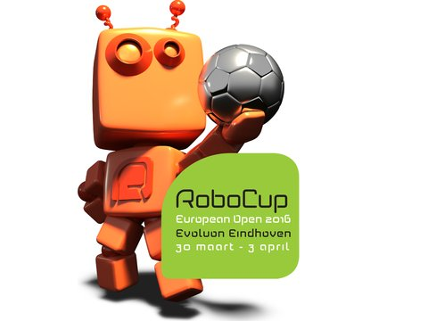
Placed 2nd in @Home League
2016,
RoboCup European Open
Eindhoven, Netherlands
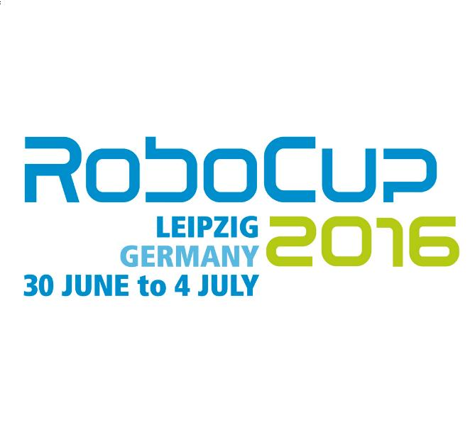
Finalist in @Home League
2016,
RoboCup World Cup
Leipzig, Germany
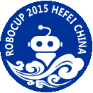
Placed 1st in @Home League (World Champion) / Placed 1st in Speech Recognition and Audio Detection / Best Looking Robot Award
2015,
RoboCup World Cup
Hefei, China
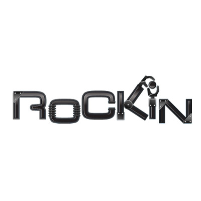
1st in overall ranking (together with team SocRob) / Best Team award
2015,
RoCKIn
Lisboa, Portugal
Best Demonstration in RoCKIn@Home track
2015,
RoCKIn Camp
Peccioli, Italy
Placed 2nd in @Home League
2015,
RoboCup German Open
Magdeburg
Placed 1st in the chair valuation
2015,
Day of Computervisualistics
University of Koblenz
1st in the @Home Track / 2nd in Object Recognition
2014,
RoCKIn
Toulouse, France
Finalist in the @Home League
2014,
RoboCup German Open
Magdeburg
Best Final Demonstration in the RoCKIn@Home track
2014,
RoCKIn Camp
Rome
Placed 3rd in the chair valuation / Placed 1st in the audience valuation
2013,
Day of Computervisualistics
University of Koblenz
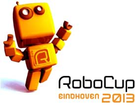
Finalist in the @Home League
2013,
RoboCup WorldCup
Eindhoven, Netherlands
Placed 3rd in the @Home League
2013,
RoboCup German Open
Magdeburg